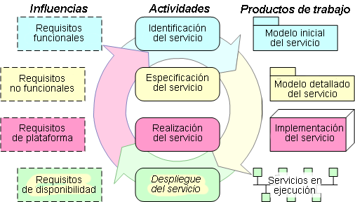

| Acerca de la arquitectura orientada a servicios |
|
|
Información de la versión
ContenidoEste conector de Arquitectura y modelado orientado a servicios (SOMA, Service-Oriented Modeling and Architecture) se crea encima del Rational Unified Process (RUP) clásico, añadiendo instrucciones para el arquitecto y el diseñador de software en el desarrollo de soluciones orientadas a servicios. Este conector se basa en la versión 2.0 del conector de RUP para SOA pero ha sido enormemente mejorado para incorporar contenido del método de Arquitectura y modelado orientado a servicios desarrollado por IBM Global Business Services (Servicios empresariales globales de IBM). El siguiente diagrama, que se explica en profundidad en Documentación técnica: La actualización de RUP para la Arquitectura orientada a servicios describe un conjunto neutral de actividades necesarias para todo proceso que pretenda desarrollar soluciones orientadas a servicios. Este proceso conceptual era común al conector de RUP para SOA y al método SOMA y permitía una integración relativamente simple de los dos modelos de contenido.  Este conector también ofrece la conexión entre modelado empresarial y modelado de servicio. Muchos proyectos de arquitectura orientada a servicios utilizan modelos de proceso empresarial para entender los requisitos funcionales y empresariales y los servicios necesarios para dar soporte a un proceso. Para obtener más información sobre este conector, consulte la Documentación técnica: La actualización de RUP para arquitectura orientada a servicios y la Guía básica: Transición desde IBM SOMA. |
© Copyright IBM Corp. 1987, 2006. Reservados todos los derechos. |